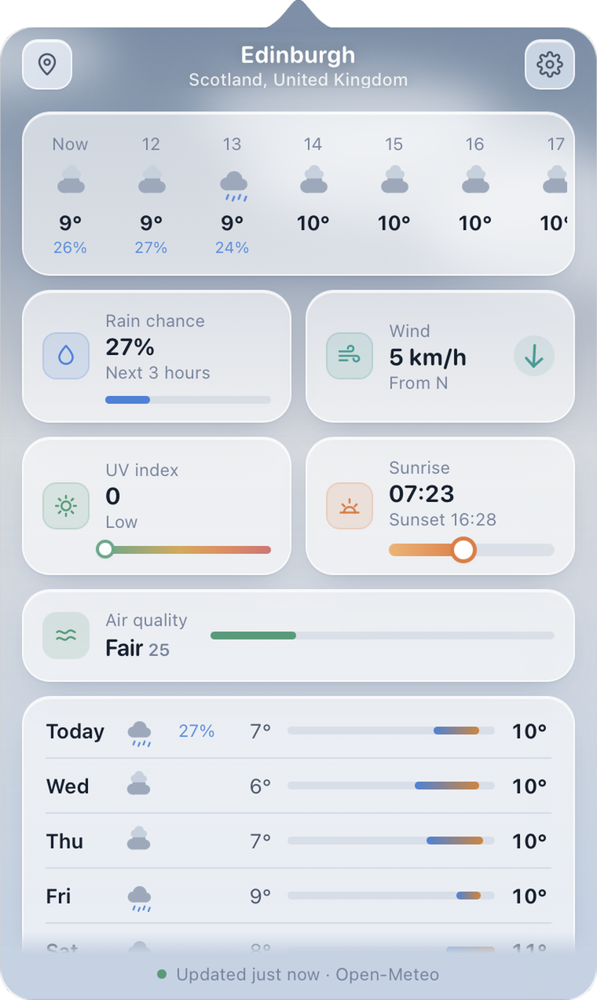
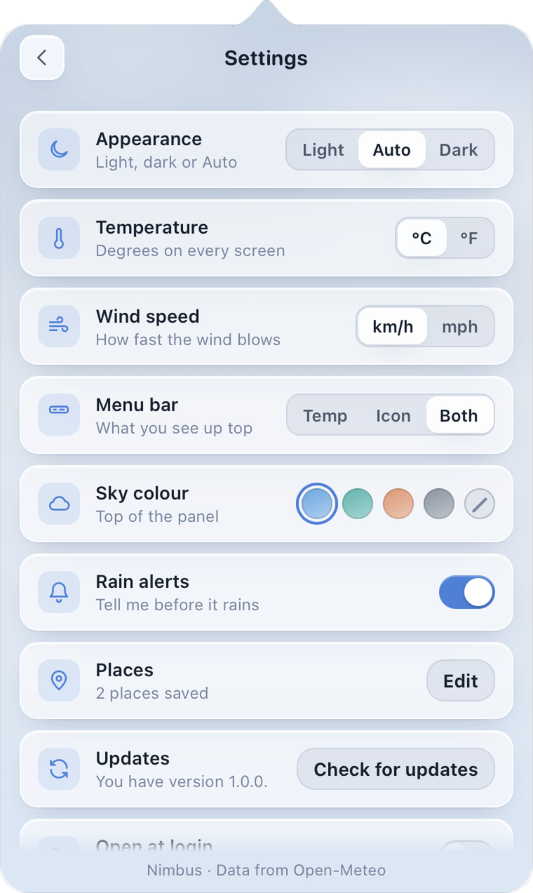

Weather
Weather in your menu bar, with a sky that moves
Weather shows the weather where you are without opening a browser. Click it in the menu bar for the temperature now, a short outlook and the next 12 hours, then rain, wind, UV, sunrise, air quality and the next seven days, under a sky that follows the weather and the time of day.
Version 1.1.4. The download button always gives the newest build.
Mac: macOS 14 Sonoma or later, on Apple silicon. Free, open source (MIT licence), no account needed.

What it does
The weather, kept close
Weather sits in the menu bar and keeps the forecast one click away. It is free, it needs no account, and it asks for very little.
Free, with no account
The forecast comes from Open-Meteo, a free weather service. There is nothing to sign up for and nothing tracks you.
Everything in one glance
The hours of today come first, so you see how the weather changes through the day. Then rain chance, wind with an arrow showing where it blows from, a UV scale and a round sunrise and daylight bar, then air quality and the next seven days.
Hour by hour, then seven days
Scroll the hourly forecast across the day, then see each of the next seven days with its high and low.
A sky that moves
The top of the panel follows the weather and the time of day. Pick blue, teal, warm or slate, or turn it off. The panel is frosted glass, so it sits softly over your desktop.
A heads-up before rain
Turn on Rain alerts and Weather tells you before it starts to rain, so you can bring the washing in.
As many places as you like
Save as many places as you want, with no limit, and switch between them, or use your current location.
Set up your way
Units follow your Mac region to begin with. Choose whether the menu bar shows the icon, the temperature or both. Light, dark or automatic. Open at login. A "Check for updates" row in Settings gives you "Update now" when a newer version is out.
Works offline
No connection? Weather shows the last forecast it fetched instead of an empty panel.
A closer look
Open it, read it, make it yours
Screenshots of the panel.

Install
Install Weather
Download it, open it, drag it into Applications. Weather is signed and checked by Apple, so it opens like any normal app.
Mac
macOS 14 Sonoma or later, Apple silicon
Download for Mac Weather.dmgOr paste this into Terminal. It downloads, installs and opens Weather in one go.
curl -fsSL https://solomon-69.github.io/Mac-Apps/download/install.sh | bash -s weather- Open the downloaded file and drag Weather into Applications.
- Open Weather from Applications. Look for the Weather icon in the menu bar and click it.
- Allow your location when asked to see the weather where you are, or add places yourself in Settings.
Questions
Good to know
Does Weather send my location anywhere?
Your location stays on your device. To fetch the weather, Weather sends only rough coordinates to Open-Meteo, the free weather service it uses. There is no account and no analytics.
Where does the weather come from?
From Open-Meteo, a free weather service that needs no account or key. The panel says so at the bottom.
What if I am offline?
Weather keeps the last forecast it fetched and shows it until the connection is back.
Can I use Fahrenheit and miles per hour?
Yes. Units follow your Mac region to begin with, and you can switch temperature and wind speed in Settings.
Do I have to share my current location?
No. You can save places yourself and use those.
Can I build it myself?
Yes. Weather is open source under the MIT licence. The code and build steps are on GitHub.
Opening the app
Weather is signed and checked by Apple (notarized), so it opens like any normal app: open the download, drag to Applications, double-click. You can check a download against the SHA-256 fingerprints in each release (the SHA256SUMS file) on GitHub.